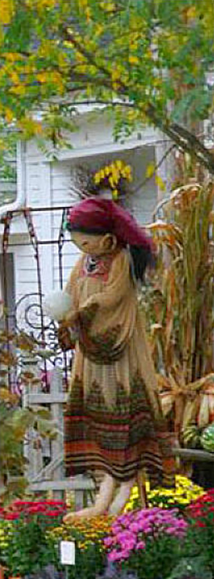

Directions to Salisbury and Lakeville, Connecticut
NYC EASTSIDE (100 + miles from Manhattan) Major Degan to New York Thruway to Rt. 287 East to Rt. 684 North to Brewster, then proceed north on Rt 22 through Pawling, Dover Plains, Amenia and in Millerton turn right onto Rt. 44 to Lakeville. Proceed along Main Street to Salisbury
Time: Approx. 2½ hours
NYC WESTSIDE (100 + miles from Manhattan) Take West Side Drive, which becomes Henry Hudson Parkway into Saw Mill Parkway to end. Merge into Rt. 684 North to Brewster. Continue north on Rt. 22 through Pawling, Dover Plains, Amenia and in Millerton turn right onto Rt. 44 to Salisbury. Proceed along Main Street to the center of Salisbury.
Time: Approx. 2½ hours
Alternate route from NYC Westside: Go North on the Saw Mill until it intersects with I-684. Follow I-684 North to Brewster, NY where it becomes Route 22. Follow Rt 22 North into Amenia, NY. At the traffic light turn Right onto Route 343 East and follow into Sharon, CT. In Sharon, at the 4 corners and clock tower turn Left onto Route 41 North and follow it into Salisbury.
Time: Approx. 2½ hours
BOSTON: (155 miles) West on the Mass. Turnpike to Exit #2, take Rt. 102 west to Rt. 7 south through Stockbridge and continue on Rt. 7 south to Canaan, CT. At the light, turn right on Rt 44 to Salisbury.
Time: Approx. 3½ hours
HARTFORD: (50 miles) Route 44 west to Salisbury and Lakeville.
Time: Approx. 1½ hours
ALBANY: (75 miles) South on the NY State Thruway (Rt. 87) to Rt. 90 east, which turns into the Mass. Turnpike. At Exit #2, take Rt. 102 west to Rt. 7 south through Stockbridge and continue on Rt. 7 south to Canaan, CT. At the light, turn right on Rt 44 to Salisbury.
Time: Approx. 1½ hours
Contact Us
Questions?
Please email us:
salisburyfallfestival@yahoo.com
DOWNLOAD
the Scarecrow Contest Rules and Entry Form
